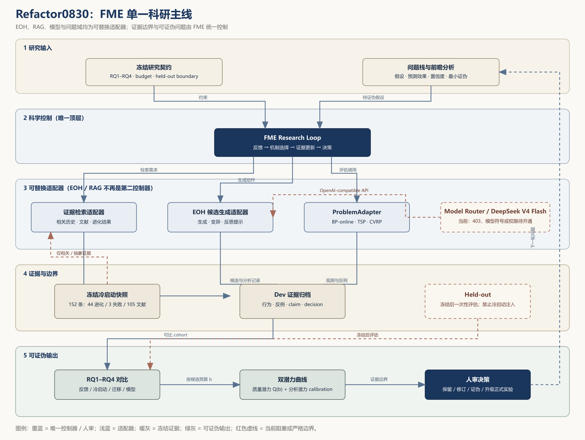

02 · Converged Mainline
收敛后的完整主线
一个控制器、三类适配器、两条潜力曲线、一道 held-out 边界，构成完整且可审计的研究叙事。

图 1：Refactor0830 的活跃科研面。红色虚线代表严格边界或当前外部阻塞。
保留什么，为什么保留
| 组成 | 在主线中的唯一职责 | 保留门槛 |
|---|
| FME Research Loop | 统一问题栈、动作选择、证据更新、反例与决策 | 必须形成可证伪 claim 与证据边界 |
| EOH | 候选算法生成、变异与反思提示 | 只作为 CandidateGeneratorAdapter |
| RAG / 历史库 | 注入相关文献、历史进化、失败经验与抽象迁移证据 | 有冻结快照、引用哈希、held-out 隔离 |
| ProblemAdapter | 把 BP-online、TSP、CVRP 变成可比的生成—评估接口 | 统一预算单位与 cohort 口径 |
| 模型 Provider | 可替换的算法生成 / 分析模型 | 同协议比较，不能混用历史 cohort |
EOH 和 RAG 仍然需要，但不再“统治主线”。EOH 回答“如何产生候选”，RAG 回答“允许给候选生成器看什么”；科学问题、可比性与是否继续由 FME 决定。
05 · Algorithm Potential
不只看末次进化：看算法潜力
最终 best score 只能回答“是否找到过好候选”；潜力曲线进一步回答“多早找到、是否持续改善、分析是否能预测后续增益”。
质量潜力曲线
对最小化问题，以初始基线 J₀ 和预算 b 内最优值 J*(b) 定义 Q(b) = (J₀ − J*(b)) / max(|J₀|, ε)，并在统一预算区间计算 normalized AUC。
| 问题 | 历史 runs | 质量 AUC | 首次达到 5% 的 run | 最终最优改进 |
|---|
| BP-online | 192 | 0.796 | 1 | 83.07% |
| TSP | 206 | 0.078 | 1 | 8.48% |
| CVRP | 207 | 0.078 | 4 | 8.60% |
BP 的高 AUC 来自很早发现并保持大幅改进；TSP/CVRP 的最终改进接近，但 CVRP 到达 5% 阈值更慢。这种差异在只看最终 best 时会消失。
分析潜力曲线
历史资产未在看到结果前冻结“预测效果与置信度”，因此本轮不能诚实估计分析潜力。新实现的 AnalysisRecord 已要求在评估前记录 observation、hypothesis、predicted effect、probability、regime、risk、cheapest falsification 与 evidence hash。下一 cohort 才能计算：
- 方向准确率、Spearman 相关与 top-k hit：分析能否排序潜力候选；
- Brier score / calibration：置信度是否可信；
- counterexample decision value：分析是否能及时停止无效路线；
- analysis-to-gain efficiency：单位分析成本换来的真实质量增益。
本轮明确把“无法估计”写入结果，而不是从已经看到 outcome 的事后文本反推分析准确率。这是防止自证循环的关键边界。